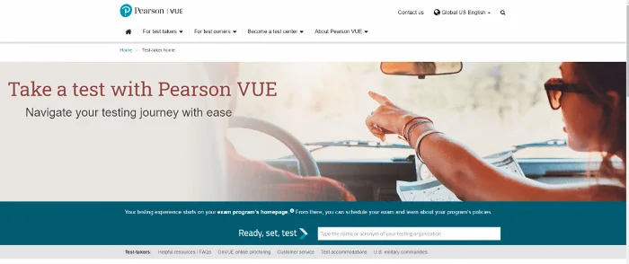
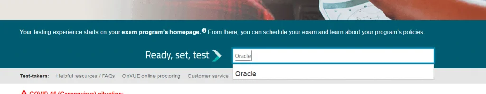
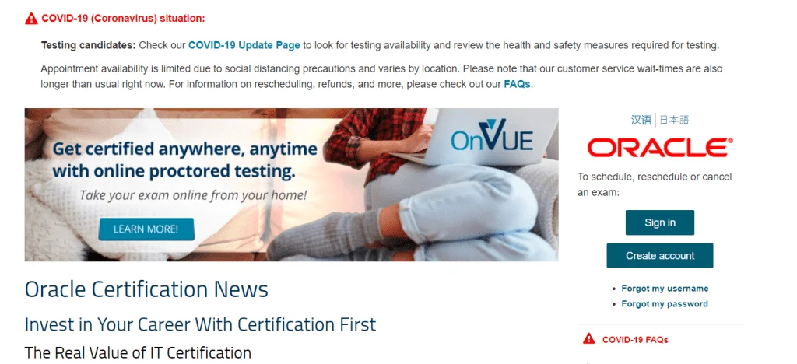
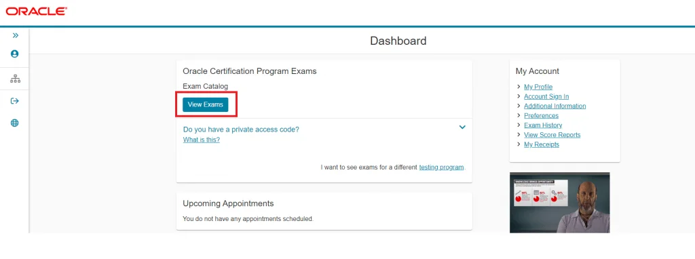
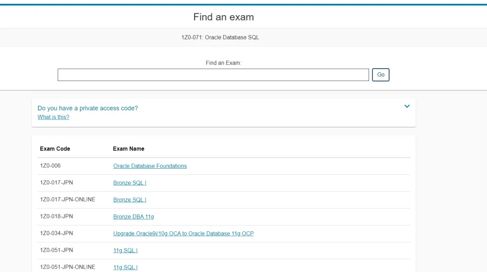
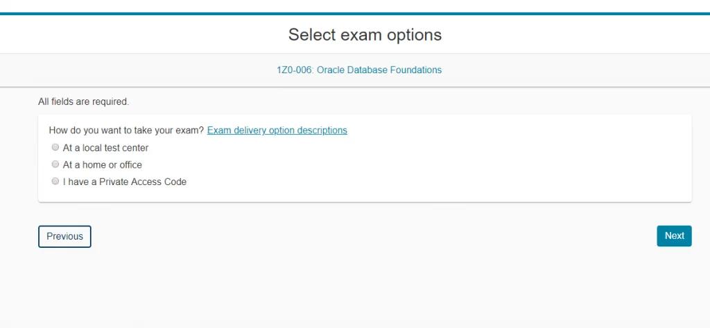
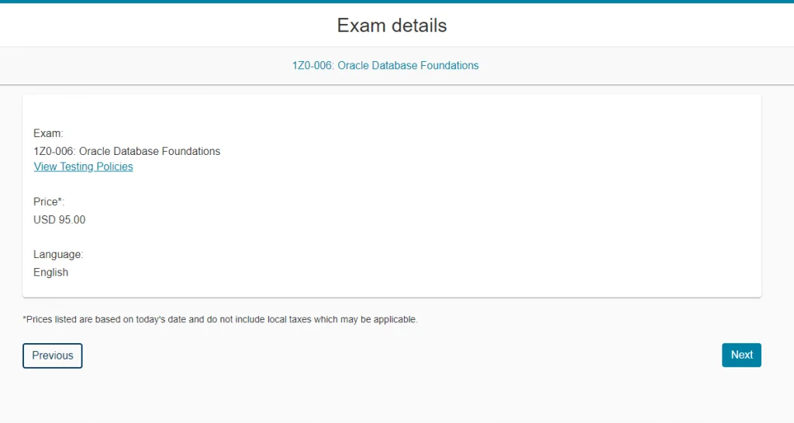
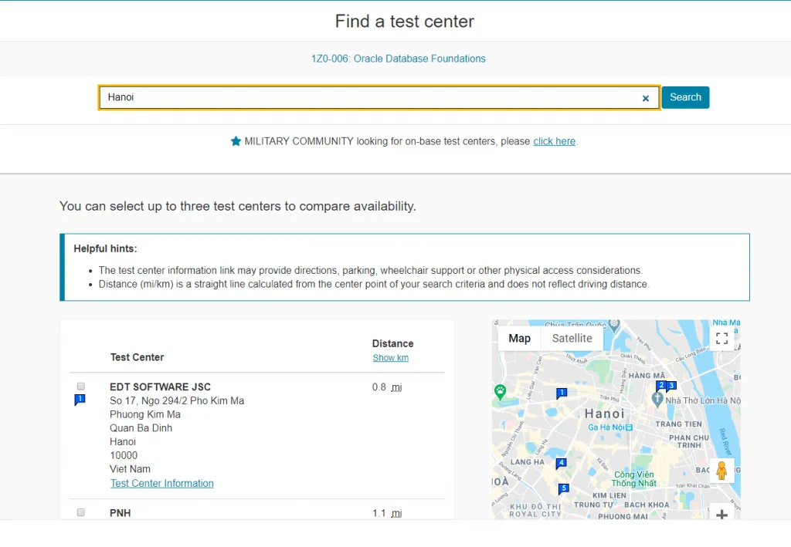
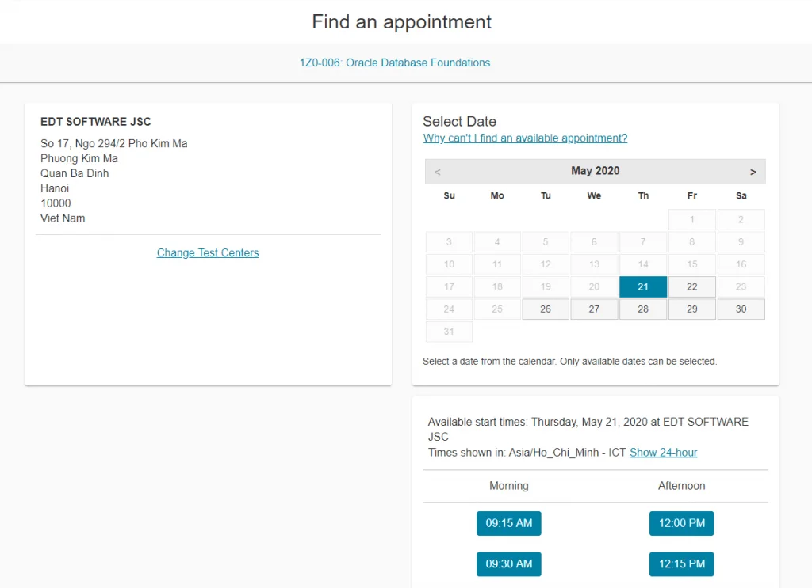
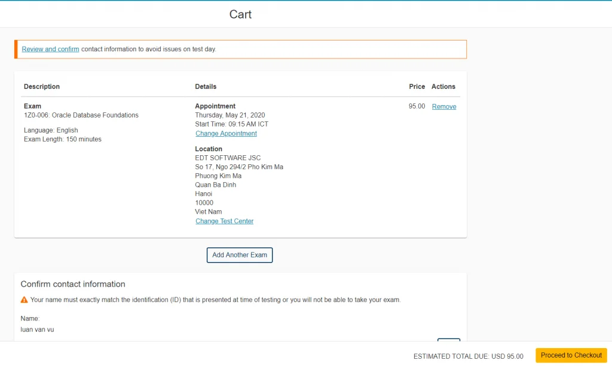

Hướng dẫn thi chứng chỉ (Pearson VUE)
Bạn đang có nhu cầu thi chứng chỉ: OCA JP, OCA DBA, AWS, Cisco hay Microsoft. Đăng ký ở đâu? Thi ở đâu? Như thế nào? Quá nhiều câu hỏi. Và đó cũng là những câu hỏi mình đặt ra khi lần đầu đi thi. Nhưng nay, sau quá nhiều lần đi thi, mình xin chia sẻ một chút kinh nghiệm mình có được.
Pearson VUE là gì
Pearson VUE là một đơn vị tổ chức thi tập trung cho rất nhiều đối tác khác nhau, khoảng 121 đối tác, trong đó có các đối tác lớn như AWS, Oracle, Microsoft, Apple,….Danh sách các đối tác của Pearson VUE có thể tìm thấy ở đây. Bạn đăng ký trên website của Pearson VUE, sâu đó là đăng ký tiếp trên website của bên cung cấp chứng chỉ (AWS, Microsoft,…) và đặt lịch ngay trên website của Pearson VUE, đến trung tâm thi của Pearson VUE và cuối cùng là nhận kết quả, rất đơn giản.
Điều khó khăn khi đi thi các chứng chỉ quốc tế đó chính là địa điểm thi, không hiểm những chứng chỉ yêu cầu người thi đi đến những địa điểm thi ở khoảng cách địa lý rất xa, cả nước chỉ có môt vài trung tâm, hoặc chỉ có ở một vài quốc gia và bạn phải di chuyển rất nhiều. Tuy nhiên, Pearson VUE đã giải quyết được vấn đề này. Pearson VUE có trung tâm trên rất nhiều quốc gia, trong đó có Việt Nam, và không chỉ vậy, Pearson VUE ủy quyền cho các bên thứ ba đăng ký ủy quyền và tổ chức thi, và các bên này rất nhiều. Điều đó có nghĩa là, bạn có thể thi các kỳ thi do Pearson VUE tổ chức tại 3 thành phố lớn Hà Nội, Đà Nắng và TP. Hồ Chí Minh, với tổng khoảng 20 trung tâm thi. Cụ thể về trung tâm thi, bạn có thể xem ở bước đăng ký thi.
Nếu bạn đã sẵn sàng để đi thi, hoặc muốn tìm hiểu quy trình thi, hãy tiếp tục đọc phía dưới.
Đăng ký thi
Trước tiên, truy cập trang của Pearson VUE dành cho Test Taker tại đây.

Tiếp theo, nhập vào tổ chức bạn sẽ thi chứng chỉ, mình sẽ thử Oracle


Tại đây, bạn sẽ cần đăng nhập tài khoản. Tùy thuộc vào tổ chức mà sẽ có loại đăng nhập khác nhau, như Oracle là sẽ cần đăng nhập tài khoản Pearson VUE cho Oracle, nhưng với AWS thì bạn lại cần đăng nhập bằng tài khoản AWS Training. Nếu chưa có tài khoản, bạn cần đăng ký. Quá trình đăng ký cũng khá đơn giản.
Việc tiếp theo sẽ là chọn Exam mà ta muốn thi


Chọn nơi sẽ thực hiện bài thi, mình sẽ chọn test center

Tiếp theo xem lại về bài thi và số tiền phải trả. Yên tâm là khoản tiền chỉ phải trả khi bạn nhấn xác nhận ở tận cuối quy trình, nên cứ tự tin nhấn Next thôi.

Chọn trung tâm thi, mình thường chọn EDT SOFTWARE. Có thể có một số trung tâm họ tạm thời ngừng hoạt động hoặc gặp vấn đề gì đó, để chắc chắn nhất, các bạn có thể gọi điện cho trung tâm để hỏi thêm

Chọn thời gian thi. Ngày thi và giờ thi sẽ phụ thuộc vào trung tâm thi mà bạn chọn, vậy nên, nếu thời gian thi không ưng ý, các bạn có thể thử chọn trung tâm khác.

Cuối cùng là confirm và tính tiền. Chú ý kiểm tra lại thật kỹ thông tin cá nhân, vì giấy tờ bạn mang theo phải khớp với thông tin đã đăng ký.

Khi đã chắc chắn thì các bạn nhấn Process. Một email sẽ được gửi đến bạn để thông báo.
Có thể trung tâm sẽ trực tiếp gọi điện lại cho bạn để hỏi han và nhắc bạn đi thi, điều này là không bắt buộc và tùy thuộc vào trung tâm thi.
Đi thi
Trình tự thủ tục tại địa điểm thi tùy thuộc vào từng trung tâm, mình sẽ kể lại trình tự mà mình hay gặp phải.
Bạn đến địa điểm thi, theo quy định là bạn phải đến sớm hơn 15 phút trước giờ thi. Ví dụ bạn đăng ký 09h15′ thì phải đến từ 09h00. Nếu 09h15′ bạn mới đến, hoặc muộn hơn một chút, bạn vẫn có cơ hội, tuy nhiên, không nên làm vậy.
Nhân viên yêu cầu xem giấy tờ của bạn. Yêu cầu tối thiểu 2 loại khác nhau, là hai trong số những giấy tờ như sau: Chứng minh thư nhân dân (Căn cước công dân), Hộ chiếu, Bằng lái xe, thẻ ATM,… Mình thường đưa ra CMTND và Bằng lái xe.
Nhân viên đưa cho bạn nội quy
Bạn cất mọi đồ dùng điện tử vào thùng để đồ: đồng hồ, điện thoại, máy tính,…
Bạn được ký vào biên bản mã bài thi, xác nhận ngày giờ vào thi,
Bạn được yêu cầu ký vào bảng ký điện tử và nhân viên sẽ chụp ảnh chân dung cho bạn (cam chụp khá xấu nên đừng mất công trang điểm trước để mong đẹp hơn)
Bạn được cung cấp bút, giấy nháp và được đưa vào “chuồng” thi. Tùy thuộc vào trung tâm mà căn phòng thi sẽ khác nhau, nhưng về cơ bản thì nó sẽ kín, có camera theo dõi và không có gì ngoài bạn cùng chiếc máy tính.
Khi đã chắc chắn muốn kết thúc bài thi, hoặc thời gian đã gần như là hết, khuyến nghị các bạn nên nhấn kết thúc chứ đừng để thời gian hết hoàn toàn. Mình chưa bao giờ có trải nghiệm để thời gian trôi hết nhưng mình được nhân viên khuyên như vậy .
Khi kết thúc bài thi, tùy thuộc vào bài thi và tổ chức thi, có thể là một vài câu hỏi để lấy ý kiến (điều mình cực ghét). Về kết quả hoặc điểm số cũng tùy thuộc, có bài thi thì bảo bạn về chờ, có bài thì chỉ nói pass hay fail, có bài thì có thể vừa có kết quả, vừa có điểm số.
Khi có kết quả thi, đừng quá kích động, hãy nhớ lấy lại vật dụng của mình và ghi thời gian kết thúc bài thi vào biên bản. Đừng quên nói cám ơn với các nhân viên tại trung tâm.
Cụ thể về trình tự, các bạn có thể xem video bên dưới. Chú ý là một số trung tâm có thể thêm hoặc bớt một số giai đoạn so với video.
Thi online
Có nhiều bài thi cho phép bạn thi online, mình thì chưa bao giờ thử, vậy nên mình chỉ dẫn lại một số thông tin mình biết được.
Bạn cần phải cài phần mềm thi lên máy tính hoặc điện thoại
Bạn phải scan ảnh chân dung (cam ngon chắc chắn đẹp hơn) và các giấy tờ tùy thân
Bạn phải quay phim/chụp ảnh toàn bộ căn phòng nơi bạn thi, đảm bảo bạn cô đơn một mình và không có bất kỳ thứ gì có thể chứng tỏ bạn gian lận.
Trong suốt quá trình thi, bạn bị theo dõi bởi camera và microphone.
Bạn không được rời khỏi phòng trong quá trình thi
Cụ thể, bạn có thể tham khảo video bên dưới:
Những chú ý khi thi
Dẫu cho bận đến mấy đừng thức khuya quá
Dậy sớm và mở tờ ghi chú ra để ôn lại. Nên có ghi chú nhé.
Ăn sáng nhẹ nhàng, uống chút nước. Đừng để trong lúc thi mà bị đau bụng thì mệt lắm nha
Nên đến sớm ít nhất 15 phút trước giờ thi. Nếu bạn đến sớm hơn, thậm chí một số trung tâm sẽ cho phép bạn thi luôn mà không phải đợi. Tốt nhất là đừng đi muộn là được.
Trước khi vào phòng thi, nên đi vệ sinh, đặc biệt mấy bạn yếu thận. Suốt 3 tiếng thi thì rất chi là bí bách đấy.
Nên xin một cốc nước để uống trước khi thi. Theo quy định thì không được để nước trong phòng, nếu bạn khát trong quá trình thi, bạn phải gọi nhân viên cho xin miếng nước, khá là mệt, vậy nên mình thường uống trước. Theo ước tính thông thường thì một người sẽ cảm thấy buồn tiểu sau 3 tiếng, và hoàn toàn có thể nhịn tiểu một thời gian ngắn. Ngược lại, trong lúc thi, bạn sẽ rất khát nước, do hồi hộp, do điều hhòa, do nuốt nước miếng quá nhiều lần. Vậy nên, hãy uống nước (ấm) trước khi thi.
Cố gắng không ngủ trong lúc thi (mình đã bị)
Trong lúc thi, nên lướt nhanh các câu, nên tập để căn thời gian cho chuẩn. Ví dụ đề thi 75 câu, làm trong 180 phút thì các bạn phải tập trước là làm trong 2 phút một câu thôi. Kinh nghiệm xương máu khi gặp những đề thi vừa khó vừa dài của mình, thậm chí có những câu mình đọc đi đọc lại mất 10–15 phút, rất lãng phí thời gian.
Câu nào khó quá và không giải quyết được, nên đánh dấu lại. Ngoài chức năng đánh dấu trên máy tính, các bạn nên đánh dấu cả trên giấy nháp. Ví dụ ghi chú là “18. A-D Block Storage”, tức là câu 18, phân vân giữa A và D, nói về “Block Storage”, sẽ ổn hơn rất nhiều. Việc đánh dấu review cũng cần chú ý, nếu đánh dấu quá nhiều thì bạn cũng chẳng có thời gian review lại, vậy nên chỉ những câu thật sự khó hãy đánh dấu.
Khi thi, hãy thật bình tĩnh và tập trung. Lúc thi thật sẽ áp lực hơn thi thử ở nhà, vậy nên cần thật sự bình tĩnh và đừng lo lắng linh tinh.
Note: Một số bài thi sẽ có chính sách khác nhau, có thể là có lợi hoặc bất lợi hơn.
Ví dụ AWS có chế độ English Second Language (ESL), theo đó nếu tiếng Anh không phải tiếng mẹ đẻ thì thí sinh được cộng thêm 30' mỗi bài thi, áp dụng một lần cho tất cả các lần từ đó về sau.
Cách làm:
Nhấn “Upcoming Exams"
Nhấn “Request Exam Accommodation"
Chọn “ESL +30 minutes" cho mục “Accommodation type" Xong, từ đó về sau, mọi lần thi AWS của bạn đều sẽ thêm 30 phút, đừng quên.
Cuối cùng
Bên trên là kinh nghiệm đi thi rất nhiều lần của mình, mong rằng giúp ích cho các bạn. Hãy ôn luyện và đi thi một cách thật tự tin, vì rời phòng thi, cái bạn nhận được không chỉ là kết quả, nó còn là kiến thức, là thử thách mà bạn đã dám đương đầu.